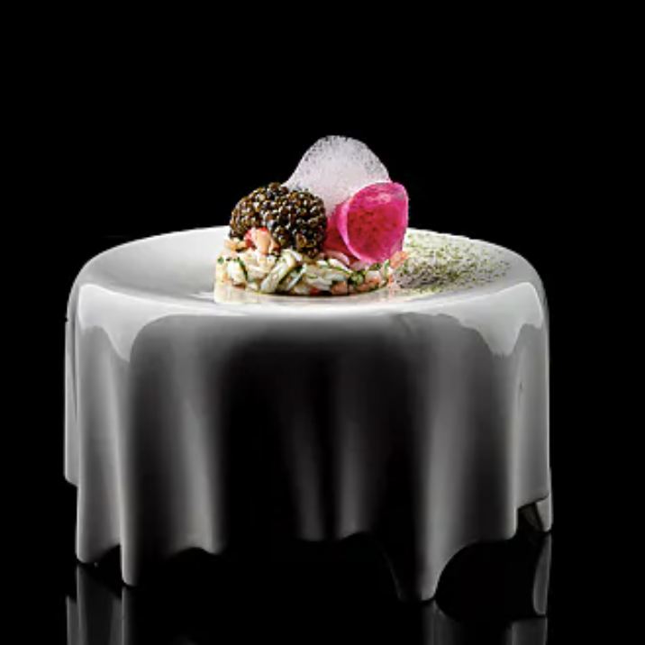

<!DOCTYPE html>
<html lang="en"></html>
<head>
	<meta charset="UTF-8">
	<meta name="viewport" content="width=device-width, initial-scale=1.0">
	<link rel="icon" href="images/favicon.ico">
	<link rel="stylesheet" href="css/html5reset.css">
	<link rel="stylesheet" href="css/style.css">
	<link rel="preconnect" href="https://fonts.googleapis.com">
	<link rel="preconnect" href="https://fonts.gstatic.com" crossorigin>
	<link href="https://fonts.googleapis.com/css2?family=Josefin+Sans&family=Space+Mono&display=swap" rel="stylesheet">
	<!-- Global site tag (gtag.js) - Google Analytics -->
	<script async src="https://www.googletagmanager.com/gtag/js?id=G-FZ98V9PHKD"></script>
	<!-- icon Kit -->
	<script src="https://kit.fontawesome.com/a2292d14c8.js" crossorigin="anonymous"></script>
	<script>
	window.dataLayer = window.dataLayer || [];
	function gtag(){dataLayer.push(arguments);}
	gtag('js', new Date());
	gtag('config', 'G-FZ98V9PHKD');
	</script>
	<title>Food in Shanghai</title>
</head>

<!-- All of the visible code in the page belongs in the body tag -->
<body>
	<!-- Header is a sematic tag page that aids readability -->
	<header>
		<!-- Nav is a sematic tag page that aids accessibility -->
		<nav>
			<div class="skip"><a href="#main">Skip to Main Content</a></div>
			<ul>
				<li><a href = "index.html" >Home</a></li>
				<li class="active"><a href = "famous.html" >Famous Food</a></li>
				<li><a href = "family.html">Family Food</a></li>
				<li><a href = "chinese.html">Chinese Cuisine</a></li>
				<li><a href = "foreign.html">Foreign Food</a></li>
				<li><a href = "contact.html">Contact Me</a></li>
			</ul>
		</nav>
		<div class="intro">
			<!-- The h1 is a semantic tag that aids accessibility -->
			<a href = "#main"><h1>Famous Food in Shanghai!</h1></a>
		</div>
	</header>

	<!-- Every page should have a main tag for accessibility -->
	<main id="main">
		<div class="paragraph">
		<p>
			As a metropolis, there are around <strong>40 mechelin star restaurants <i class="fa-solid fa-utensils"></i></strong> in Shanghai, including Cantonese, French 
			food, Italian food, even innovative food. Although they are extremely delicious, they are usually expensive. 
			It is common to spend more than <strong>$500</strong> per person in a mechelin star restaurant in Shanghai.
		</p>
		</div>
		<div class="act_images">
			<div class="restaurant">
				
				<h2>French</h2> 
				<h3>
					<a href="javascript:void(0);" id="star_1" style="display: true;">
					<div class="fa-stack">
					<i class="fa fa-star fa-stack-1x" style="display: none; color: orange;"></i>
					<i class="fa fa-star-o fa-stack-1x"></i>
					</div>Add favourite!
					</a>
					<a href="javascript:void(0);" id="un_star_1" style="display: none;">
					<div class="fa-stack">
					<i class="fa fa-star fa-stack-1x" style="color: orange;"></i>
					<i class="fa fa-star-o fa-stack-1x"></i>
					</div>Remove from favourites
					</a>
				</h3>
				<h4>L'Atelier de Joël Robuchon</h4> 
				
				<ul>
					<li><i class="fa-solid fa-location-dot"></i> 83 Changshu Road</li>
				</ul>
			</div>
			<div class="restaurant">
				
				<h2>Italian</h2>
				<h3>
					<a href="javascript:void(0);" id="star_2" style="display: true;">
					<div class="fa-stack">
					<i class="fa fa-star fa-stack-1x" style="display: none; color: orange;"></i>
					<i class="fa fa-star-o fa-stack-1x"></i>
					</div>Add favourite!
					</a>
					<a href="javascript:void(0);" id="un_star_2" style="display: none;">
					<div class="fa-stack">
					<i class="fa fa-star fa-stack-1x" style="color: orange;"></i>
					<i class="fa fa-star-o fa-stack-1x"></i>
					</div>Remove from favourites
					</a>
				</h3>
				<h4>8 ½ Otto e Mezzo Bombana</h4>
				<ul>
					<li><i class="fa-solid fa-location-dot"></i> 169 Yuanmingyuan Road</li>
				</ul>
			</div>
			<div class="restaurant">
				
				<h2>Cantonese</h2>
				<h3>
					<a href="javascript:void(0);" id="star_3" style="display: true;">
					<div class="fa-stack">
					<i class="fa fa-star fa-stack-1x" style="display: none; color: orange;"></i>
					<i class="fa fa-star-o fa-stack-1x"></i>
					</div>Add favourite!
					</a>
					<a href="javascript:void(0);" id="un_star_3" style="display: none;">
					<div class="fa-stack">
					<i class="fa fa-star fa-stack-1x" style="color: orange;"></i>
					<i class="fa fa-star-o fa-stack-1x"></i>
					</div>Remove from favourites
					</a>
				</h3>
				<h4>Ji Pin Court</h4>
				<ul>
					<li><i class="fa-solid fa-location-dot"></i> 155 South Wulumuqi Road</li>
				</ul>
			</div>
			<div class="restaurant">
				
				<h2>Innovative</h2>
				<h3>
					<a href="javascript:void(0);" id="star_4" style="display: true;">
					<div class="fa-stack">
					<i class="fa fa-star fa-stack-1x" style="display: none; color: orange;"></i>
					<i class="fa fa-star-o fa-stack-1x"></i>
					</div>Add favourite!
					</a>
					<a href="javascript:void(0);" id="un_star_4" style="display: none;">
					<div class="fa-stack">
					<i class="fa fa-star fa-stack-1x" style="color: orange;"></i>
					<i class="fa fa-star-o fa-stack-1x"></i>
					</div>Remove from favourites
					</a>
				</h3>
				<h4>Taian Table</h4>
				<ul>
					<li><i class="fa-solid fa-location-dot"></i> 465 Zhenning Road</li>
				</ul>
			</div>
		</div>
		<div class="paragraph">
		<p>
			There are also a large amount of high-class restaurants that are not necessary Michelin Restaurant but are located 
			in the most famous tourist attractions. <strong>The bund</strong> is one of the most famous places in Shanghai. 
			There are also of course lots of high-level restaurant at the Bund where both Chinese people and foreign people 
			would love to come. There are also restaurants in <strong>Chenghuang Temple, Jin Mao Tower, Yu Garden</strong>, etc.
		</p>
		</div>
		 <div class="act_images">
			<div class="place">
				<p> Restaurant at the Bund </p>
				
			</div>
			<div class="place">
				<p> Buffet at Jin Mao Tower </p>
				
			</div>
			 <div class="place">
				<p> Chenghuang Temple </p>
				
			</div>
			<div class="place">
				<p> Dumplings in the Temple </p>
				
			</div>
			
		 </div>

	</main>
	<script src="https://ajax.googleapis.com/ajax/libs/jquery/3.3.1/jquery.min.js"
    crossorigin="anonymous"></script>
	<script src="js/famous.js"></script>
	<!-- Footer is a sematic tag page that aids readability -->
	<footer>
		<p>H. Cora Zhang &copy; 2022; <a href = "contact.html" >Contact Me!</a></p>
	</footer>
</body>
</html>
